Loading 100% archival scan…
A Data Essay in Seven Chapters
Somewhere in family history — an unconfirmed number of greats back, because Irish fishing families in the 1700s were not keeping aristocratic pedigrees — an ancestor was transported to Australia for theft around 1850; family legend remembers a horse, maybe stolen on purpose in front of an Englishman so a convict ship would carry him out of the famine.1 This essay asks what kind of system makes a penal colony look like a rescue, and what the survivors' descendants paid when whiteness was offered back.
The thesis here is calibrated to the paper trail: the Great Famine was made far deadlier by policy, built on economic doctrine and hardened by a contempt that spoke the language of race — and where stronger words like "genocide" or "invented whiteness" are contested by historians, Chapter 5 stamps them honestly beside the documents.2
Chapter 1 · The Prototype
Before England's parliamentary enclosure peak, before the Sutherland clearances, and before colonial India's famine codes, the legal machinery of expropriation was built and tested in Ireland. Across the seventeenth century, roughly 80% of Irish land changed hands through plantation, survey, forfeiture, and statute (not in a single 1652 stroke, as shorthand often claims).3
Mary's reign: first Tudor plantation scheme; the colony falters, the legal template stays (F10).
Munster planted (1586); Edmund Spenser settles at Kilcolman (c.1588–89) and has Irenius propose starving rebels into submission (F11, F13).
Same year, two coasts: Plantation of Ulster and the Statutes of Iona policing Highland Gaels (F10).
Acts of Settlement & Satisfaction + Petty's Down Survey cut Catholic land from ~59% (1641) toward ~22% by 1688; "To hell or to Connacht" is a later phrase (F01–F02, F06–F07).
7 Will. III c.4–5 (education, arms) & Popery Acts (2 Anne c.6, 8 Anne c.3): the statutory lock on land and caste (F08).
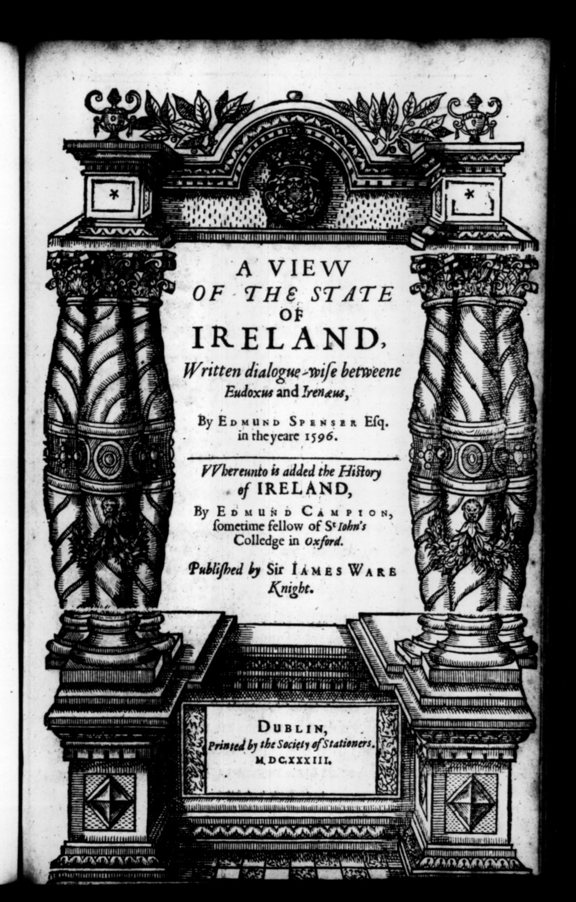
The starvation tactic was on paper in Ireland 250 years before the blight — spoken by Spenser's character Irenius against rebels in arms (F11). The essay, not the historians, draws the line to 1846 (F12).
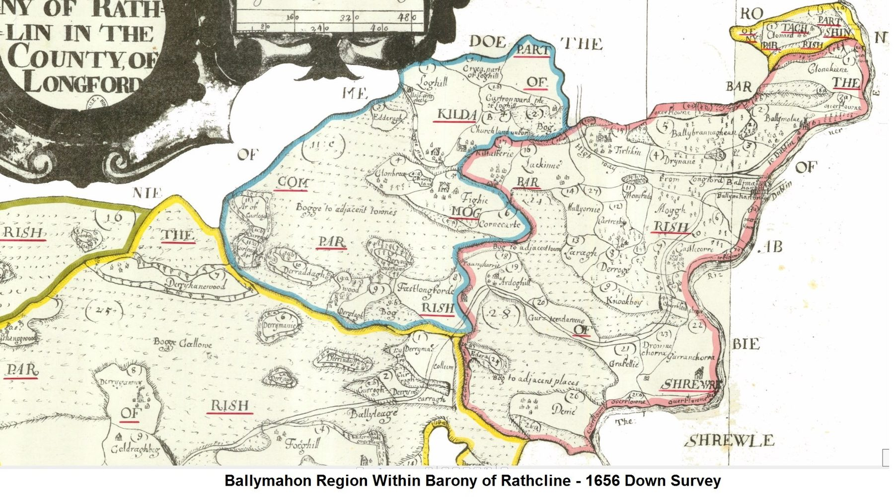
Confiscation required measurement: William Petty's 1656 Down Survey mapped forfeited townlands — here the Barony of Rathcline, County Longford — to pay Cromwell's soldiers and London adventurers (F06).
Chapter 2 · The Ledger
In England, over 5,200 parliamentary enclosure acts fenced roughly 6.8–7 million acres — about a fifth of the country, not a sixth.4 In Ireland, confiscation and penal statute emptied Catholic landholding across four benchmarks before the 1876 Return of Owners showed just 32,614 people owning more than an acre out of 5.4 million (~0.6%).5 That aristocratic obliviousness had an emblem in late 1845, when the Duke of Norfolk told his Sussex labourers a pinch of curry powder in hot water would send a man to bed "much warmer and more comfortably" — ridiculed by Punch in January 1846 (F99; said to Sussex labourers, not Ireland).
Caveats beside the bars: 1641 estimates span ~42% (modern Down Survey GIS) to ~70%; Simms's benchmark is 59% (F01). By the 1770s (3–5%, not tied specifically to 1778, F04), 1,878 registered converts (1702–52) and Catholic long-leaseholders mean nominal ownership understates Catholic landholding on the ground (F05).
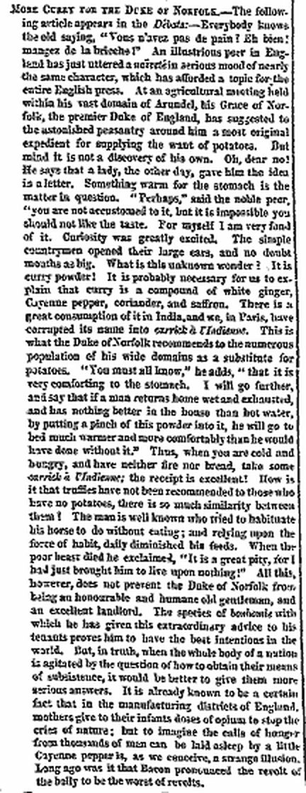
Northern Star, 3 Jan 1846, p. 5, col. 1 (via NCSE, PD). Reprinting the Paris Journal des Débats on the 13th Duke of Norfolk's advice to his Sussex labourers — not Ireland (NF1).
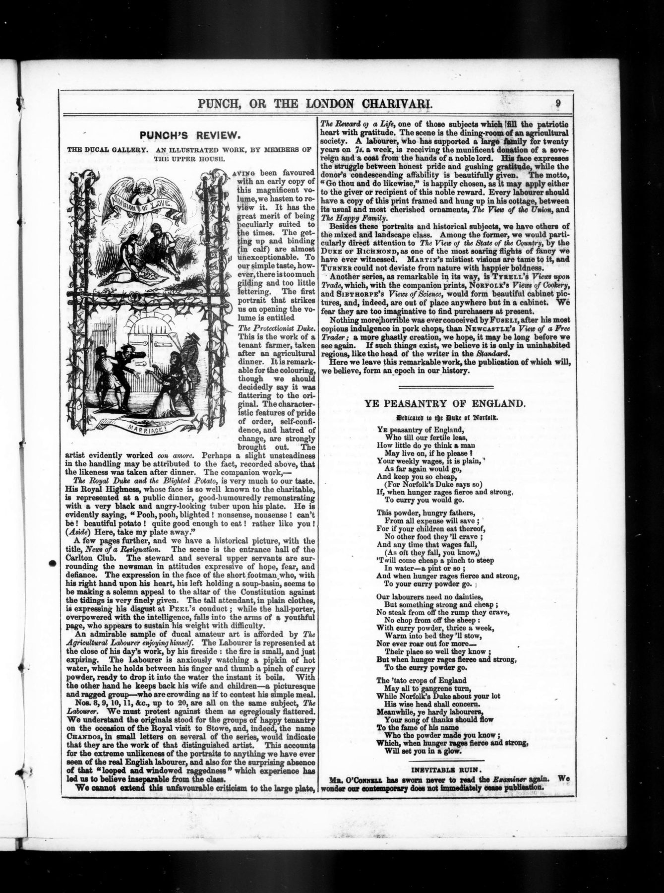
Punch, Vol. 10 (Jan 1846), p. 9 (Internet Archive, PD). Companion satire ("Ye Peasantry of England. Dedicated to the Duke of Norfolk" + "The Ducal Gallery"): "With curry powder, thrice a week, Warm into bed they'll stow..."
Chapter 3 · Not Quite White
The Irish were never ruled legally non-white under the U.S. Naturalization Act of 1790.6 What nineteenth-century science and journalism did instead was place the Irish on a graded ladder adjacent to Blackness — while Theodore W. Allen argues that colonial Virginia had already written the template after Bacon's Rebellion in 1676: "Irish history presents a case of racial oppression without reference to alleged skin color or, as the jargon goes, 'phenotype.'" (Allen vol. 1, p. 22 — framed as his thesis alongside his critics, F29).7
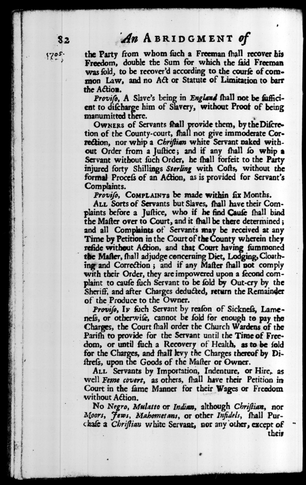
An Abridgement of the Publick Laws of Virginia (1728), p. 82 (margin 1705.): forbids whipping a "Christian white Servant naked without Order from a Justice" and bars Black, Indigenous, or non-Christian people from owning one. Two caveats (F98): Bacon's Rebellion (1676) began in a 1675 settler war on Native peoples, and Encyclopedia Virginia notes planters began shifting to enslaved labour decades earlier.
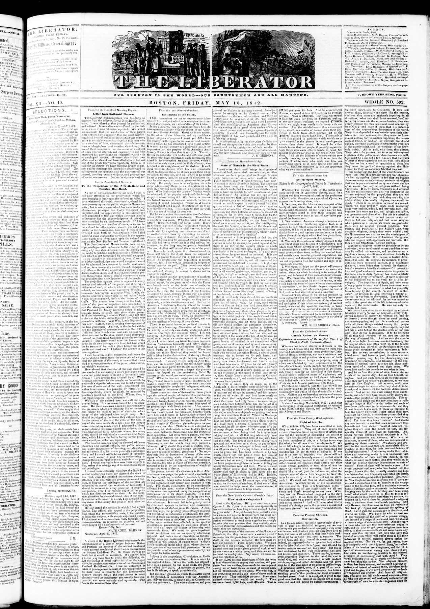
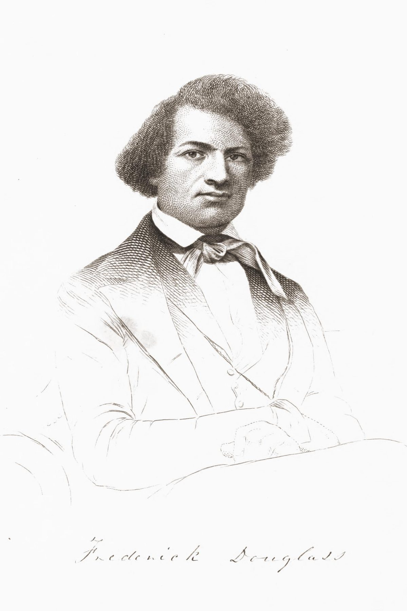
Daniel O'Connell, 9 May 1843 (Corn Exchange, Dublin; verified in 1843 US antislavery papers, O1 — not 1845). On 28 Jan 1842, Garrison read the 60,000-signature Irish Address to ~4,000 at Faneuil Hall (F100); a month later Irish-American papers denounced it. In Belfast (1 Jan 1846), Frederick Douglass noted "the entire absence of every thing that looked like prejudice against me, on account of the color of my skin" (F101).
Chapter 4 · Black '47
The blight struck in 1845; the Census counted 8,175,124 people in 1841 and 6,552,385 in 1851 — with Connacht dropping 28.8% (1,418,859 → 1,010,031; −408,828 persons, W-S −28.6%) and recording a starvation death ratio of 1 in 119.8 Roughly a million died and over a million sailed overseas in 1846–51 (1,180,409 counted by the Emigration Commissioners, plus 200,000+ to Britain; F34). What follows is the paper record — grain tonnage in and out, live-animal returns, verified statements from the officials who ran policy, and the eyewitnesses who walked the roads.
Honest accounting: Grain exports did not stay flat — Ireland became a net grain importer from 1847 through 1851 (1847 imports: 840–890k tons vs. ~145k tons exported, F39). Separately, port/market returns record 3,129,014 live cattle, sheep, and pigs shipped to Britain in 1846–50, though the yearly flow halved from 932,930 (1846) to 475,193 (1850) as pig stocks collapsed (F43). No annual excess-death series exists to plot beside this (F44).
Every card below is verified or cleanly traced in quote-verification.md; retired/unverified compilation quotes have been evicted.
"The deep and inveterate root of social evil remained, and this has been laid bare by a direct stroke of an all-wise and all-merciful Providence, as if this part of the case were beyond the unassisted power of man."
"I quite agree with you that the uncertainty respecting the next crop only makes it the more necessary that our present relief operations should be brought to a decided, though gradual close, this being the only course open to us to prevent the people from becoming habitually dependent on the Government for food..."
"The people naturally look to their oats and other grain as a substitute for their potatoes, and if they are compelled to consume them, where is the rent to come from?"
"Examined the body of Thomas M'Manus; both the legs, as far as the buttocks, appeared to have been eaten off by a pig; is of opinion his death was caused by hunger and cold." … "Let Lord John Russell read the above, and then say, if he can, that he is justified in keeping the government stores closed against the people."
"…the general results of the Census of 1851… are, on the whole, so satisfactory."
"No deliberate cruelty and no intention to kill anyone."
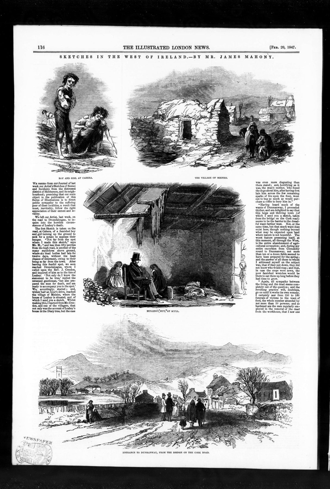
James Mahony, Boy and Girl at Cahera, ILN 20 Feb 1847 (PD). Eyewitness sketch near Skibbereen.
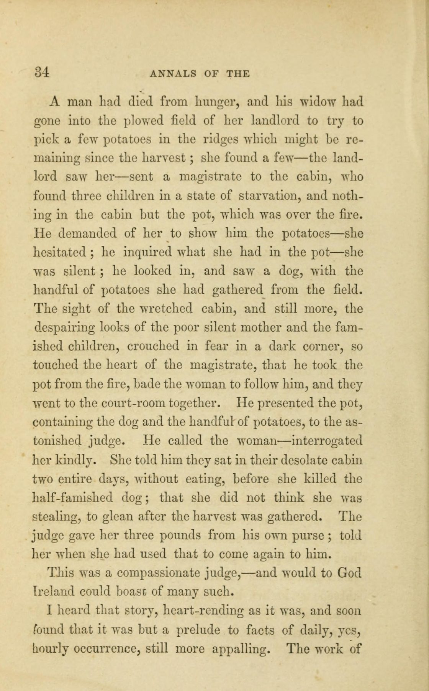
Asenath Nicholson, Annals of the Famine (1851), p. 34 — the widow, the half-famished dog, and the pot carried before the magistrate (recounted to her, N1).
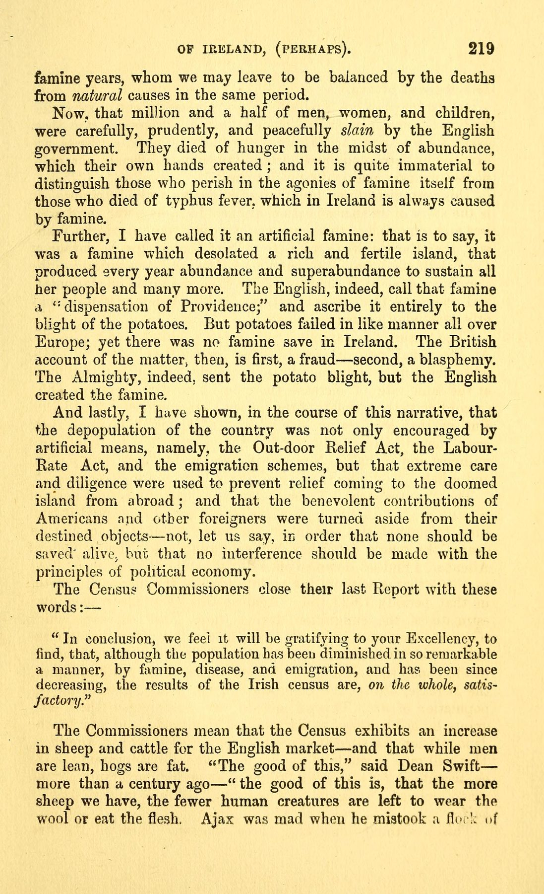
John Mitchel, p. 219 (book ed. 1861, M1): "The Almighty, indeed, sent the potato blight, but the English created the famine."
Chapter 5 · Test the Claims
amss.as109730 · PD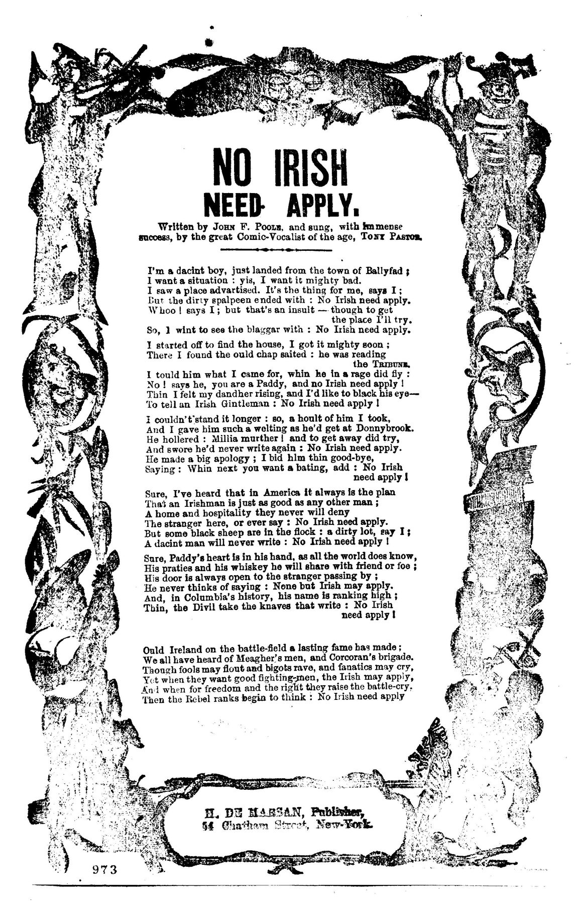
John F. Poole's 1862 comic song (H. De Marsan, NY) popularized the phrase across America alongside real classified ads (F45–F46).
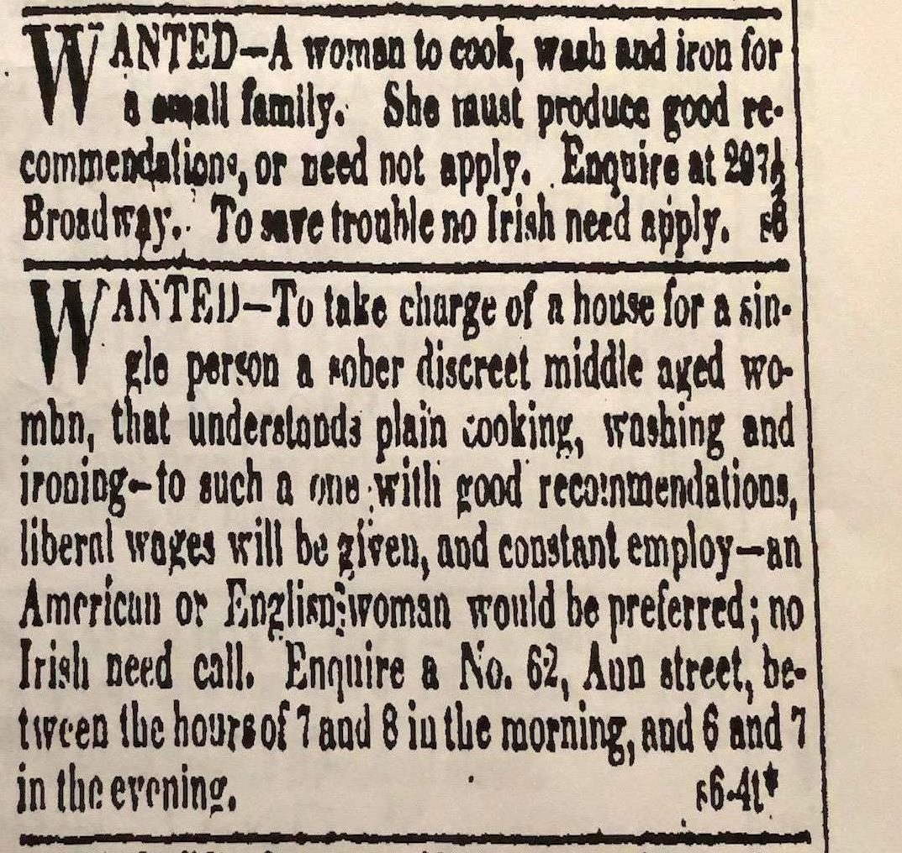
Two consecutive domestic-service ads in the Evening Post (8 Sept 1828). Jensen conceded women's domestic ads existed while disputing male ads and physical window signs; Fried documented 69 cases overall, including 15–20 in the NY Sun (1842–43).
Chapter 6 · The Bargain
William Lloyd Garrison named the suspicion in March 1842: "the bargain obviously is... that the South shall go for Repeal, and the Irish, as a body, shall go for Southern slavery!" (GA3). David R. Roediger puts the mechanism precisely: "The making of the Irish worker into a white worker was thus a two-sided process... Irish immigrants won acceptance as whites among the larger American population. On the other hand, much to the chagrin of Frederick Douglass and Daniel O'Connell, the Irish themselves came to insist on their own whiteness and on white supremacy" (RG2, p. 137; drawing on W.E.B. Du Bois's 1935 "public and psychological wage" — "wages of whiteness" is Roediger's phrase, never Du Bois's, F97).
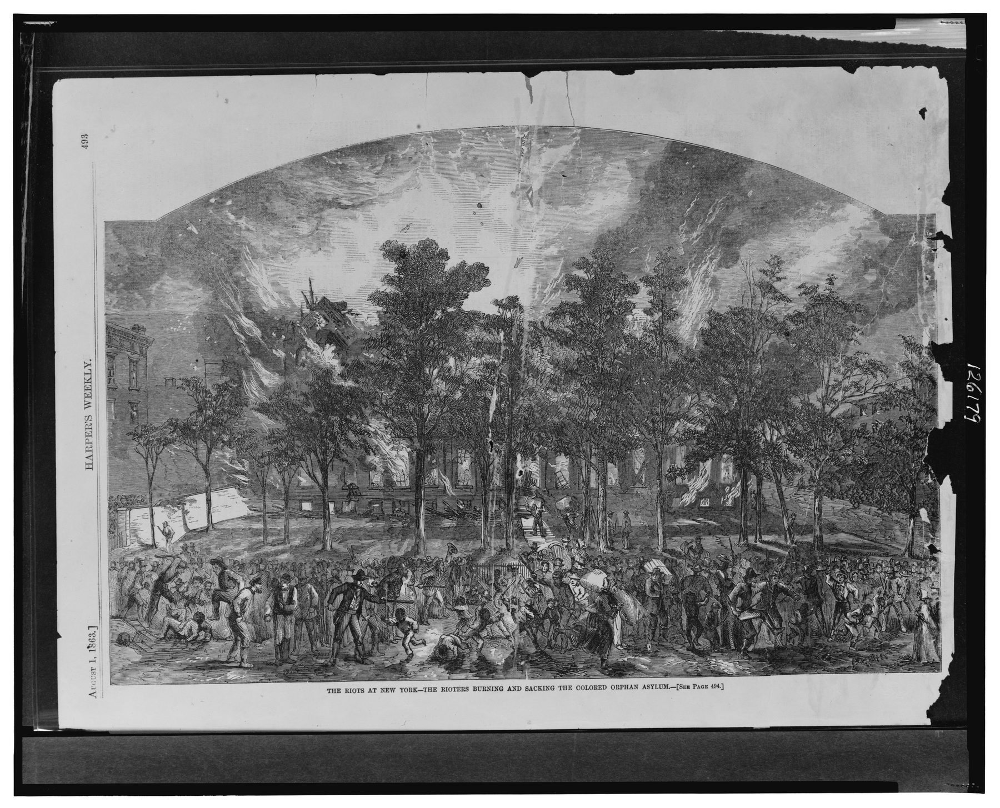
13–17 July 1863 (five days): at least 105 dead, ~119 documented, including 11 African-Americans lynched (F47); all 233 children of the Colored Orphan Asylum escaped (F48). No arrest-record percentage exists; Iver Bernstein notes "Irish Americans dominated the crowds, but many Irish New Yorkers stayed aloof from or fought against the mobs" (F49). Institutional bargaining mechanisms are documented across Philadelphia and New York (F50, IG5): Philadelphia's 1856 Moyamensing Hose police appointments ("officially empowered (armed) to defend themselves from the nativist mobs, and at the same time to carry out their own agenda against black people," Ignatiev pp. 163–164), Tammany ward police patronage, the NY 1821 $250 Black suffrage restriction defended in 1826/1846, and 1863 dock exclusions (NYPD/Boston police % shares & exact Union Irish regimental counts remain open).
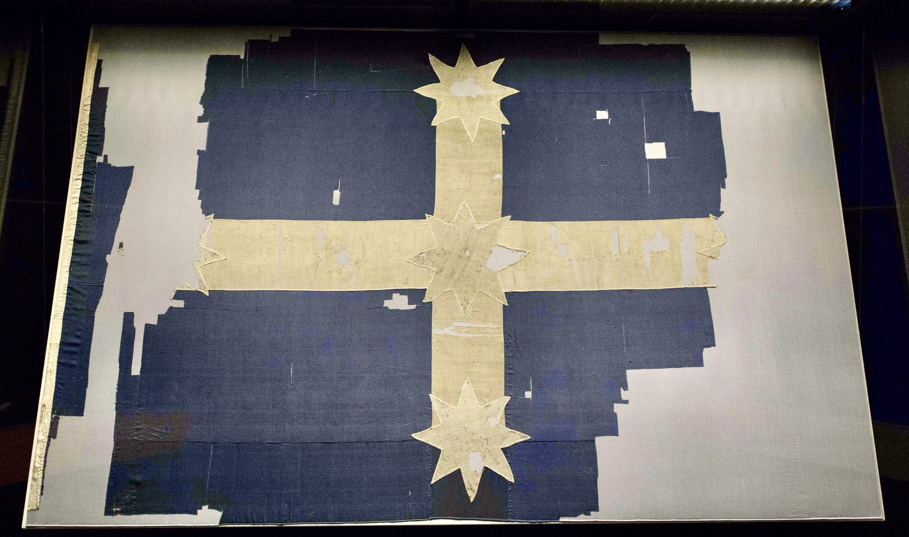
Corrected route (F51–F58): Irish male transportation to Australia was suspended in 1846 (~2 yrs → Bermuda hulks); from 1848 to 1853, Van Diemen's Land was the destination (only 1 direct Irish ship ever went to WA). Once free, 50–70% of VDL convicts left — 30,000–40,000+ crossing to Victoria despite its 1852 Convicts Prevention Act (F94–F96). Above: the original 1854 Eureka Flag (10 of 18 dead with stated origin were Irish, F61). Castle Hill 1804 had no flag (F59); Lambing Flat 1861 rioters are recorded as "European miners", not "Irish rioters" (F60).
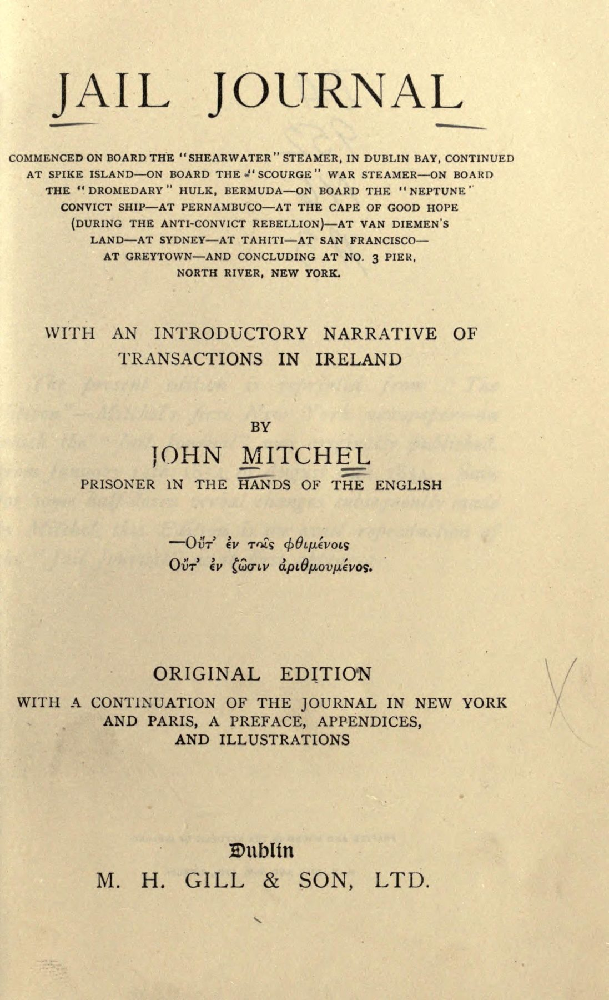
Mitchel's route (F65): Dublin → Spike Island → Bermuda → Neptune → Pernambuco → Cape → VDL (1850) → escape (1853).
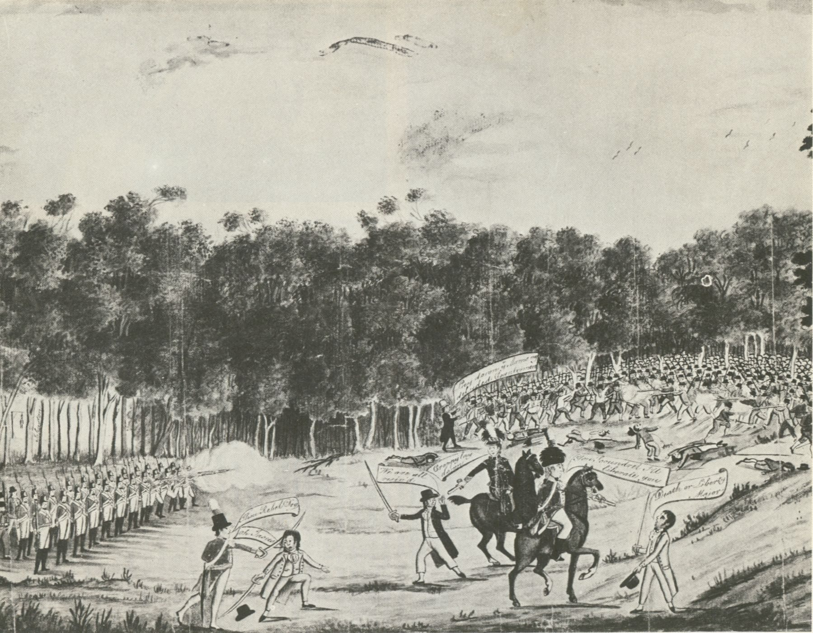
Castle Hill, 5 Mar 1804 (F59): 200–300 rebels, 9 executed; "Death or Liberty" slogan, no known flag.
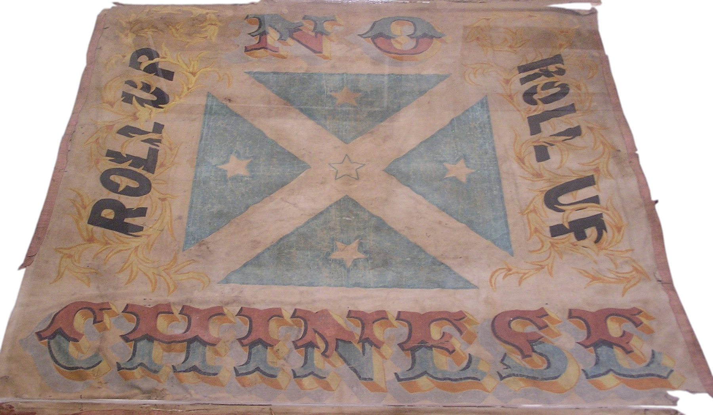
Lambing Flat, 1861 (F60): "Roll Up, Roll Up, No Chinese" banner; official records name "European miners", with Irish publican James Torpy acquitted.
Chapter 7 · The Memory
The charge in this chapter is O'Connell's, 180 years older: diaspora Irish who stand in an ancestral parish to mourn dispossession while backing dispossession elsewhere have walked away from the inheritance they claim. John Mitchel was exhibit zero — the famine's fiercest chronicler announcing in The Citizen (14 Jan 1854) that he wished for "a good plantation, well-stocked with healthy negroes, in Alabama" (M5). Modern American presidents refined the script into a village speech.
The speech: "like coming home" (Ballyporeen, 3 June; "moment of joy" was Shannon, 1 June — never spliced). Never says "famine": calls it "a time of stress" (R1–R2). Michael Regan was in London by 30 Mar 1851 (left during the famine, F72).
The speech: St. Muredach's Cathedral, built partly with bricks from Edward Blewitt's 1827 tally; Blewitt crossed in 1850/51 (famine role contested, F70). Fintan O'Toole (Irish Times, 11 Apr 2023): Biden embodies "an idea of what we used to be" (F71).
Finale · The Inheritance
Near the end of The Wretched of the Earth (1963), Frantz Fanon sets down what colonial violence leaves inside children — told strictly as he recorded it as court-appointed examiner in Algeria: two schoolboys, thirteen and fourteen, who killed a European playmate ("We can't kill big people. But we could kill ones like him, because he was the same age as us"; the elder, two of whose relatives died in the 1956 Rivet militia killings: "And did they arrest a single Frenchman for all those Algerians who were killed?", pp. 270–272), and refugee children under ten showing a noise phobia, chewed pencils, a game of poking holes in stretched paper, and "a great thirst for peace and for affection" (pp. 277–278, FN3–FN4).
This essay adds one Irish turn to Césaire's boomerang (our own argument, not his): Europe first rehearsed those procedures inside Europe, on the Irish — and then offered the survivors admission on the other side of the ledger. The horse thief got onto the ship because the ship was the door out. What his descendants do with the door is still open.
Sources & About These Numbers
About these numbers: Every figure on this provisional page traces to proj/conditionally-white/figures.md (F01–F102) and research/quote-verification.md. Ranges and scholarly disagreements remain visible: famine excess mortality (~800k–1.1M, Boyle & Ó Gráda vs. Mokyr); 1641 Catholic land share (~42–70%, benchmark 59%) and 1770s share (3–5% with 1,878 registered converts); 1846 armed export convoys paired with Ireland's net grain-importer status from 1847; Jensen (~2–12 male ads) vs. Fried (69 NINA cases); no arrest-record percentage for 1863 Draft Rioters; and the UN CoI genocide finding (16 Sep 2025) paired with Israel's categorical rejection and the active ICJ schedule.